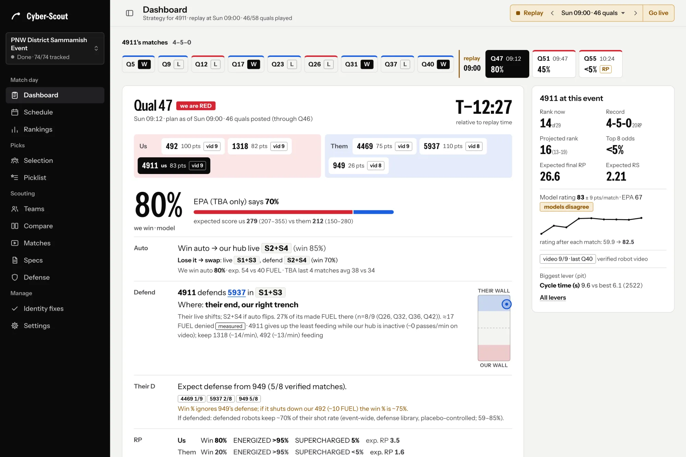
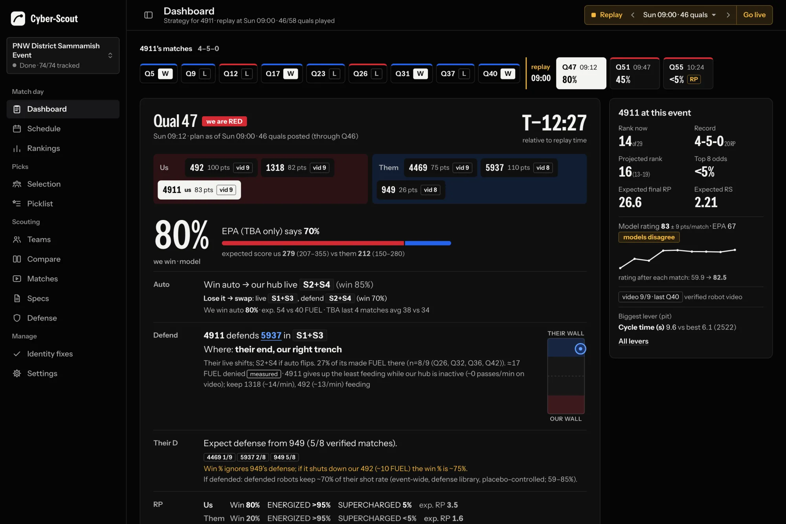

Fully autonomous scouting.
Cyber-Scout watches the match videos of your FRC event, tracks every robot and every ball, and hands your strategist the plan for the next match. Nobody has to sit in the stands with a tablet.
Built by FRC 4911 for 2026 REBUILT. Runs on your team's own computer.
Seen in every match video
- All six robots, tracked 30 times a second into paths on the field
- Who is who, read from the bumper numbers, with a confidence for every frame
- Every FUEL ball in the air, from launch to the hub or the floor
- Shots made and missed, passes, and clears away from the other hub
- Auto routines: where each robot goes and what it scores
- Defense: contacts, pins and time spent defending
- Climbs come from The Blue Alliance's per-robot results, not from the video.
What your strategists get
- A match plan for each of your matches: win chance, auto plan, who to defend and when
- A shared picklist you rank by dragging
- Alliance-selection odds for every team, with pitch cards
- Spec sheets for every team: scoring, shot charts, auto, climbs, reliability
- A defense library that measures who really slows down whom
- Hub active, hub inactive: how each team plays in both
How it runs
- On your own server: one team computer with Docker; your data and keys stay there
- Hands-off: a match takes 3 to 4 minutes on a GPU once its video is up
- Offline at the venue: desktop Client, installable web app, Android app
- Team accounts with roles for viewers, scouts, strategists and admins
- Honest numbers: each says how many matches back it, and guesses are labelled
The real app, with real data
The demo is Cyber-Scout itself, frozen at PNW District Sammamish 2026 on Sunday at 09:00, with Qualification 47 twelve minutes away. No sign-in.


Install the server
Run one command on the team computer that will do the tracking. It checks Docker, downloads Cyber-Scout and the detector model from this site, starts it, and prints the address and a one-time setup code. Run it again any time to update.
curl -fsSL /downloads/get.sh | bashIn a terminal. Needs Docker with Compose. An NVIDIA GPU is used when the NVIDIA Container Toolkit is installed; without it, tracking runs on the CPU.
curl -fsSL /downloads/get.sh | bashIn Terminal. Needs Docker Desktop, running. Macs have no NVIDIA GPU, so tracking runs on the CPU: fine for following one event, about 4 times slower per match.
irm /downloads/get.ps1 | iexIn PowerShell. Needs Docker Desktop with the WSL 2 backend, running. NVIDIA GPUs are used through WSL 2 with a current NVIDIA driver.
Works on computers that can reach this site (this address): the same network, or a VPN into it. The installer, the code and the model come from here, checked against their SHA-256.
Step-by-step guideRead get.shinstall.shinstall.ps1ChecksumsVersion …
Add the Client to every laptop and phone
The same app with a full copy of your server's data, so it keeps working on venue Wi-Fi. One file, nothing else to install: run it, enter your server's address, sign in.
On an iPhone or any other phone, open your server's address in the browser and add it to the home screen. The builds aren't signed yet, so your browser, Windows, macOS or Android's Play Protect asks you to confirm first: the step-by-step guide shows each one. Not sure which Mac? Apple menu, About This Mac: a Chip named Apple M… is Apple silicon.